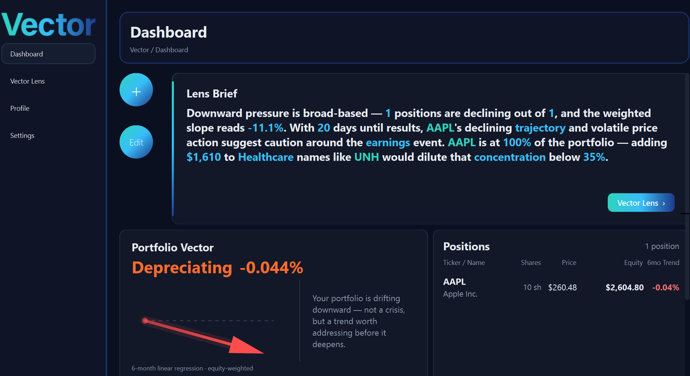

Portfolio analytics built to deliver clarity, direction, and actionable insight.

Overview
A new layer of intelligence for your portfolio.
Protonyx Vector is a desktop portfolio analytics application designed to combine traditional financial data with a more advanced analytical system called Vector Lens.
Built to help individuals better understand their portfolios through clean infrastructure, useful analytics, and focused outputs.
Purpose
Built for users who want answers, not dashboards.
- Clarity over noise
- Actionable insight over endless data
- Simplicity without sacrificing intelligence
Vector Lens
The analytical engine at the core of Vector.
Vector Lens processes thousands of data points across a personalized portfolio to generate clarity, provide direction, and support smarter decision-making. It turns complex portfolio conditions into understandable outputs.
01 — Lens Brief
A short three-sentence summary of the most important portfolio insight.
- Current State: Portfolio trend, slope, volatility, and direction
- Context: Supporting data — dividends, EPS, and event inputs
- Projection: A practical suggested direction based on mathematical analysis
02 — Projection List
A full list of generated portfolio projections, internally referred to as Lens Projections.
03 — Mathematical Analysis
Two Monte Carlo simulations — the current portfolio, and the portfolio with projections applied — to show projected risk reduction and distribution tightening visually.
Features
Everything you need. Nothing you don't.
Dashboard
- Lens Brief at the top
- Widget-based layout
- Total equity
- Diversification charts
- Positions list
- Market beta
- Dividend calendar
- Editable layout
Lens Page
- Lens Brief
- Full projection list
- Monte Carlo simulations
- Diversification comparison charts
Profile & Settings
- Guest user system
- Edit positions
- Clear cached data
- Adjust Lens thresholds
- Toggle dark and light mode
Portfolio Input
Getting started takes under a minute.
Vector is designed to make portfolio entry fast and frictionless. All you need is a ticker and a share count — the app handles the rest.
Access
Simple access. Full capability.
Free
Basic data and dashboard access.
Paid
Full Vector Lens functionality and advanced analytical outputs.
How it works
- Visit protonyxfin.com
- Purchase a subscription
- Download the app
- Log in and access full features
Roadmap